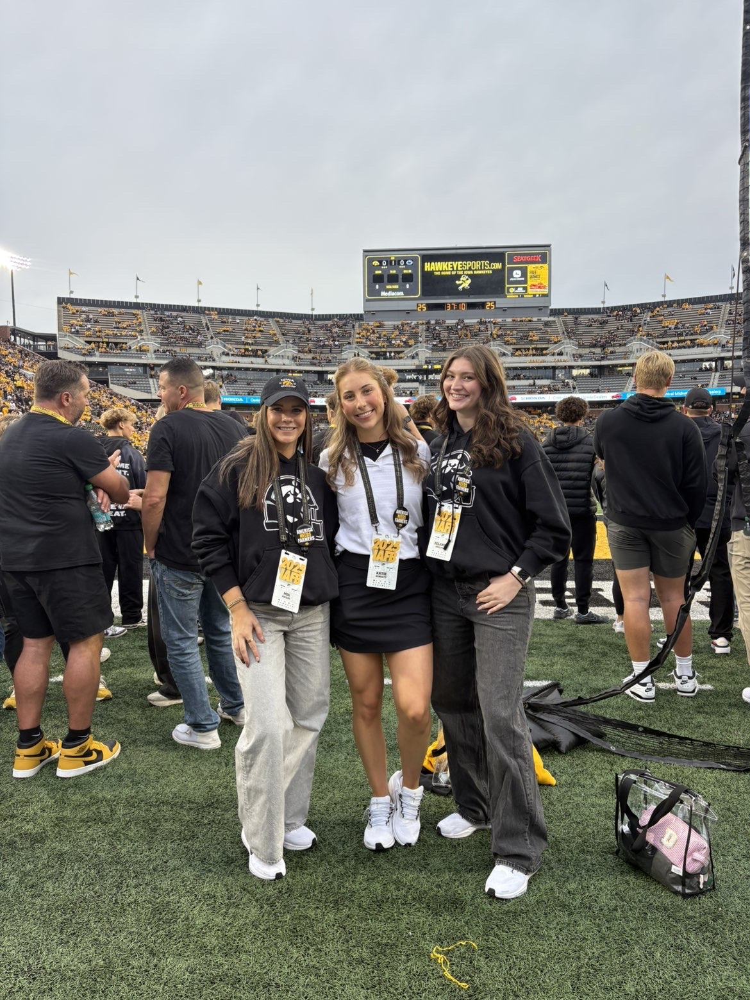
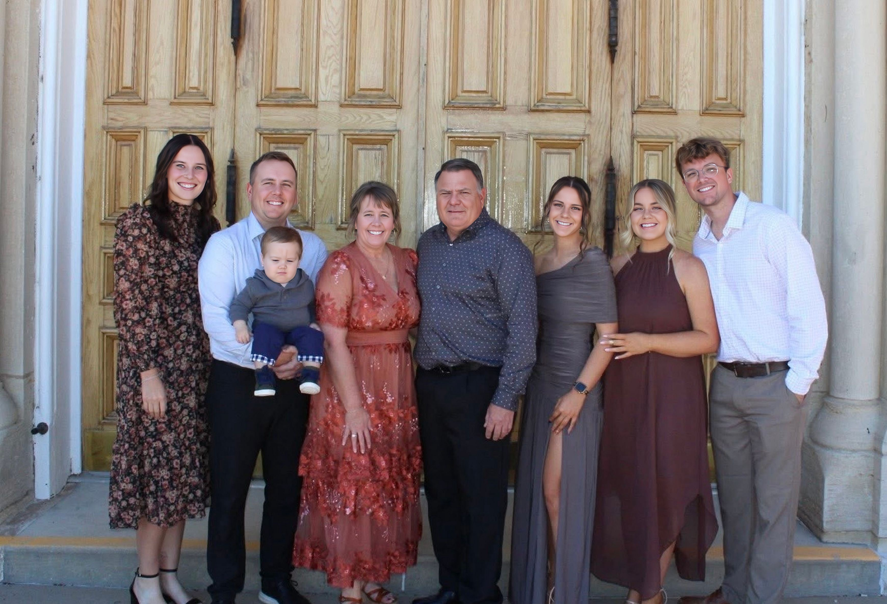

Mia Maiers
About Me
Hi! I'm Mia Maiers, a junior studying Business Analytics and Information Systems at the Tippie College of Business at the University of Iowa. I grew up in Dyersville, a small farm town in eastern Iowa known for the Field of Dreams. Currently, I work for Iowa Football, where I assist with recruiting and operations. This role builds on my previous experience as a Financial Analyst for Decker Concrete and my internship in Finance Analytics at Medical Associates and Clinic, where I developed skills in data analysis, created Power BI dashboards, and trained departments on Microsoft Lists. After graduation, I will be returning to Decker Concrete as a full-time Business Analyst.
Outside of the Classroom
I enjoy spending time with friends and family, staying active, and traveling! I am involved on campus, especially as Vice President of Technology within Tippie Technology and Innovation Association. I am also a member of Women in Business, Tippie Business Honor Society, and Beta Gamma Sigma. I am truly grateful for the experiences and memories I have gained while at the University of Iowa.

My Family
I am also close with my family, which includes:
- My dad, Jeff
- My mom, Tricia
- My older brother, Chance
- My sister-in-law, Abigail
- My nephew, Griffin
- My older sister, Tori
- My brother-in-law, Nick
